Kampanya hakkında detaylı bilgi almak için bizi arayın. (0212) 912 24 26 nolu numaradan bize ulaşabilirsiniz. Dilerseniz iletişim formunu doldurun müşteri temsilcimiz sizi arasın.
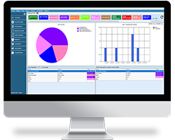
Online Teknik Servis hizmeti veren firmaların gereksinimlerini karşılayabilecek düzeyde geliştirilmiş,
servis kayıtlarını ve opsiyonel olarak işletme muhasebenizi de tutabileceğiniz internet tabanlı bir programdır.
Servis hizmeti veren firmaların en büyük ihtiyaçlarından biri, arızalı cihazın servise girişten itibaren takibidir.
Bu program ile onarım, teslimat, iptal, fiyatlandırma, giriş vb. tüm durumların takibi sağlanır.
Bilsoft Teknik Servis Programı ile bu evrelerin tümünü ister bilgisayarınızdan,
ister cep telefonunuzdan hızlı bir şekilde yaparak zamandan tasarruf eder ve iş yükünüzü de hafifletirsiniz.
Bilsoft Teknik Servis Programı gelişmiş servis giriş işlemi ile arızalı cihaza dair, cari, marka, model, seri numarası,
işlem yapan personel, garanti, şikayet,
kişiselleştirilebilir kontrol durumları ve benzeri bir çok özellikle servis girişini gerçekleştirebilirsiniz.
Program Özellikleri
Servis Kaydı ve Teslim Formu Bastırma
Açılan Servis Kayıtları için Talep Formu ve Teslim Formları bastırabilirsiniz.
Servis "TALEP FORMU" nu imzalı bir şekilde bir nüshasını müşteriye verebilir.
Bir nüshasını da iş takibi için Teknik Servisinizde kullanabilirsiniz.
İş bitiminde TESLİM FORMU ile müşterinize verebilirsiniz.
Barkod Etiketi Bastırma
Servis içindeki cihazların takibini kolaylaştırmak içinmüşteri bilgilerinin ve kayıt numarasının olduğu barkod etiketi bastırarak cihaz üzerine yapıştırabilirsiniz.
Teknik Servis Kaydını Faturaya Dönüştürme
Açtığınız her bir servis kaydını dilerseniz işlemin sonunda Faturaya dönüştürerek çıktısını alabilirsiniz.
Ayrıca yaptığınız bu işlem Eğer Online Muhasebe Programı ile entegre olarak kullanacaksanız otomatik olarak muhasebe programında müşterinizin hesabına işleyecektir.
Başlıklı SMS Gönderme
Sms Gönderme
Mail gönderme
Müşterinizin servisteki cihazının durumunu anında öğrenebilmesi için belirlediğiniz iş durumlarında otomatik olarak müşteriye mesaj ya da mail gönderebilirsiniz.Servisteki cihazı hakkında bilgilendirme yapabilirsiniz.
Kullanıcı Tanımlama
Personel tanımlama
Her personele özel giriş bilgisi tanımlama
Program internet üzerinden çalıştığı için, teknik servisinizdeki cihazların durumundan tüm personeliniz haberdar olur. Böylece müşterilerinize daha hızlı servis hizmeti verebilirsiniz.
Dış Servislerin Kontrolü
Kurulum, Tanıtım, Devreye Alma gibi dışarıya servis hizmeti veriyorsanız online olarak çalışan teknik servis programımız sayesinde cep telefonundan anında kontrol sağlayabilirsiniz.
Personeliniz girdiği işlemin durumunu siz de cebinizden kolayca takip edersiniz.
Tamamlanmayan Cihazların Kontrolü
Müşterilere verdiğiniz teslim gününü geçirmemeniz için kalan gün kontrolü yapabilirisiniz, günü gelen ve geçen servislerin kontrolü kolaylıkla takip edebilirsiniz.
Esnek İş Durumu Tanımlama
İş durumu tanımlama
İstediğiniz gibi işlem durumları tanımlayabilir. Tanımladığınız bu işlem durumları seçildiğinde otomatik olarak sms ve e-mail gönderebilirsiniz. Müşterilerinize ürünlerinin durumlarını anlık olarak bildirebilirsiniz.
Operasyonel Bilgi Giriş Ekranı
Müşteriyle kim konuştu, hangi işlem durumunu kim giriş yaptı, ne zaman yapıldı vb... servise gelen cihazlar için bu tür sorunlar genelde yaşanır. Bu ekrandan her cihaz için sınırsız bilgi girişi yapabilirsiniz.
Kategori Bazlı Cihaz Takibi
Birden fazla kategorideki cihazlara servis hizmeti veriyorsanız cihaz kategorilerini(OTOMOBİL, KAMYON, TELEFON, KAMERA, YAZICI, TABLET, NOTEBOOK, LCD TV vb. ) tanımlayarak, kategori bazlı cihaz takibi yapabilirsiniz.
Stok Modülü
Stok Girişi
Stok Çıkışı
Satış
Stok Modülü Online Muhasebe Programı ile entegre çalışır böylelikle yaptığınız tüm satışlar muhasebe programınızdaki stoklardan da otomatik düşer.
Müşteri Modülü
Müşterileri tanımlama
Müşterileri hareket takibi
Online Muhasebe Programı ile entegre çalışan bu modül sayesinde, faturaya dönüştürdüğünüz servis kayıtları, otomatik olarak müşterinin bakiyesine eklenir.
Durum raporu - Müşteri raporu - Satış raporu - Personel raporu - Garanti raporu
Web Sitesi Sorgulama Modülü ( Opsiyonel )
Müşterileriniz, web sitesi üzerinde kendi cihazlarının durumunu sorgulayabilir. Cihazının son durumunu görebilirler.
Otomotiv Sektör Modülü
Araç ekleme paneli ile servisinize gelen aracın kaydını oluşturma
Oluşturduğunuz araçları carileriniz üzerine kayıt etme
Firma rapor ile cari/firma üzerine kayıt edilmiş araçların servis kayıtlarını raporlama
Araç Rapor ile kayıt edilmiş aracın Servis kayıtlarını raporlama
Oluşturmuş olduğunuz araca Servis eklemek için aracı seçip Servis Ekle Fonksiyonu ile hızlı servis kaydı oluşturma
Araç Kayıtları panelinde araca ait servis kayıtları listelenip araca ait oluşturulan servis kaydının Servis Detay bölümüne giriş,Araç Kayıtları panelinde listelenen servis
Araç Kayıtları panelinde listelenen servis kayıtlarının Teslim Formu,Talep Formu ve Etiket Yazdırma işlemleri gerçekleştirebilirsiniz.
Periyodik Bakım
Program üzerinde oluşturulmuş araçlara bakım tarihine göre kayıt oluşturma
Oluşturulmuş bakım kayıtlarının tarihi geldiğinde panel üzerinde tarihigelmiş ve geçmiş kayıt satırları kırmızı renge dönerek bakım tarihi geldiği bilgisi algılanır
Bakım Türü ve Mesaj Formatları oluşturarak bakım kayıtlarının seri olarak doldurulması sağlanır
Sms ve Mail Gönderme işlemleri bakım kaydı oluşturulmuş müşteriye bildirim gönderilir
Resim Galerisi
Servis Detay ve Araç Kayıtları bölümlerine eklenen resim galerisi ile
Oluşturulan servis kaydına ait resim ekleme
Oluşturulan Araçlara ait resim ekleme
Eklenen resimleri galeride görüntüleme
Galeride görüntülenen resimlere Mouse Çift Click ile bilgisayarınız üzerinde bulunan fotoğraf görüntüleyicisiyle fotoğrafın görüntülenmesini sağlayabilirsiniz.
Program Görselleri
Web Görselleri
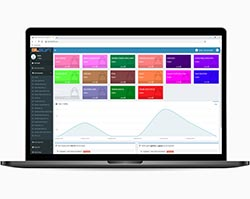
ANA SAYFA
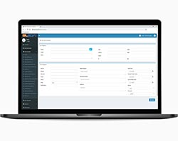
YENİ SERVİS KAYDI
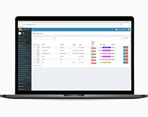
SERVİS KAYITLARI
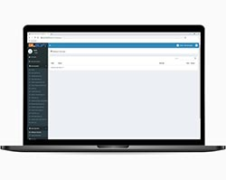
FATURA İŞLEMLERİ
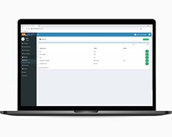
MÜŞTERİLER
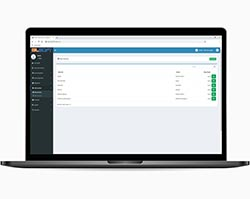
STOK KARTLARI
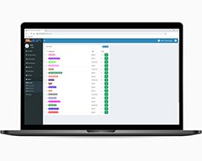
DURUMLAR
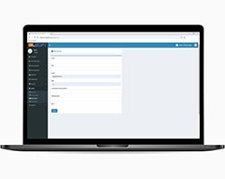
MAİL AYARLARI
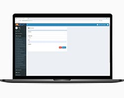
SMS AYARLARI
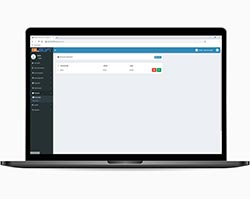
PERSONEL İŞLEM
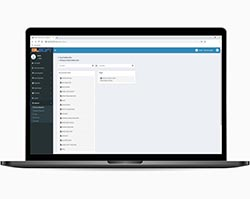
DURUM RAPORLARI
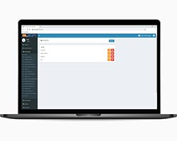
YETKİLENDİRME
Mobil Görselleri
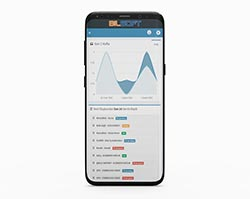
ANA SAYFA
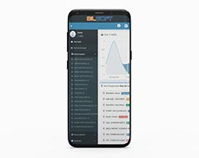
YAN MENÜ
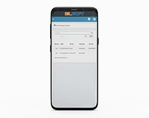
SERVİS KAYITLARI
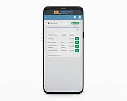
MÜŞTERİLER
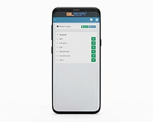
MÜŞTERİLER GRUP
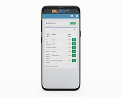
STOK KARTLARI
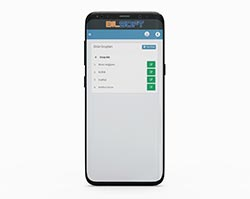
ÜRÜN GRUPLARI
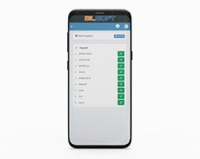
STOK GRUPLARI
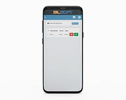
PERSONEL İŞLEM
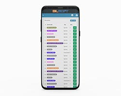
DURUMLAR
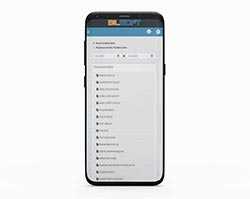
DURUM RAPORLARI
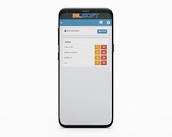
YETKİLENDİRME
Masaüstü Görselleri
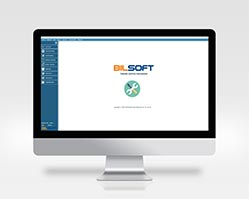
ANA SAYFA
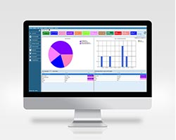
ANA GÖSTERGE PANELİ
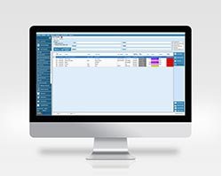
SERVİS KAYITLARI
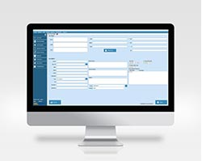
YENİ SERVİS KAYITLARI
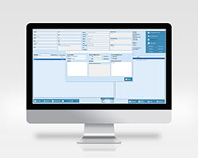
SERVİS KAYDI AŞAMA EKLEME
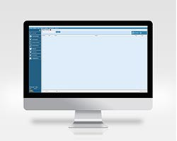
FATURA İŞLEMLERİ
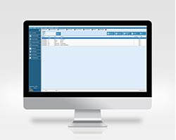
STOK KARTLARI
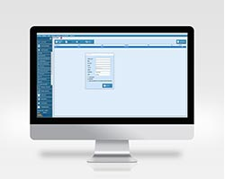
PERSONEL İŞLEMLERİ
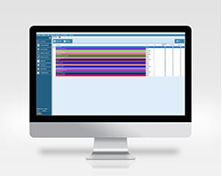
DURUMLAR
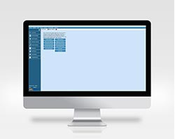
RAPOR TASARIMLARI
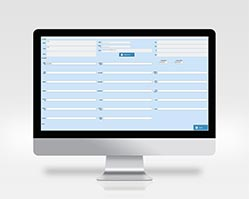
ARAÇ EKLEME
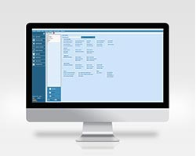
YETKİLENDİRME
Sık Sorulan Sorular (S.S.S)
Teknik servis modülünüzü muhasebe programınızla birlikte kullana bilirmiyim?
Teknik servis modülü Bilsoft Online Muhasebe programıyla birlikte entegre çalışabilmektedir.
Muhasebe programı içerisindeki stoklarınızı ve carilerinizi teknik servis modülünden görebilir ve işlemlerinizi yapabilirsiniz.
Teknik servis programı kullanınca muhasebe programını kullanmak zorunda mıyım?
Teknik servis programını ister Bilsoft Online Muhasebe programı ile birlikte isterseniz tamamen muhasebeden bağımsız kullanabilirsiniz.
Girdiğim servis kayıtları online muhasebe programında gözükür mü?
Servis kayıtları Faturayı işlendikten sonra muhasebe programında gözükmektedir.
Basabilirsiniz. Eğer web üzerinde basacaksınız bunun için bir ek program gereklidir. Masaüstünden direk basabilirsiniz.
Form tasarımlarında değişiklik yapabilir miyiz?
Kullanıcılar program ile tasarımlarınız düzenleyebilir. Bu hizmet bizim tarafımızdan verilir ise ücrete tabidir.
Programda kullanıcı yetkilendirmesi var mı?
Yetkilendirme mevcut. Detaylı olarak personellerinizi yetkilendirebilirsiniz.
Programı nasıl üst sürüme yükseltebilirim ?
Eğer program içerisinde kendinize özel olarak yaptırdığınız herhangi bir fatura veya rapor dizaynı var ise güncelleme yapmadan önce bunların yedeğinizi almalısınız.
Programın kurulu olduğu yeri açarak Rapor klasörünü kopyalayıp başka bir yere yapıştırınız (Masaüstü veya başka bir klasör).
Program içerisinde hakkında bölümünden güncellemeleri kontrol et işlemi ile güncelleme yapabilirsiniz.
Eğer özel olarak yaptırdığınız fatura veya rapor dizaynınız var ise bunları tekrar yüklemek için: kopyasını aldığınız "Rapor" klasörünü programı kurduğunuz yere yapıştırınız.